ECON 2316 • Microeconomic Theory • Chapter 11
Monopoly
When Spotify raised Premium from \$10.99 to \$11.99, how much of that extra dollar did it keep? This chapter answers with a single equation — \(MR = MC\) — and turns it into a number you can read off any price tag.
Dr. Richeng Piao
Department of Economics
Northeastern University — 100 min
Learning Objectives
By the end of class today, you will be able to…
11.1
Derive marginal revenue from inverse demand and explain why \(MR < P\) for any price-maker. (Bloom L3)
11.2
Solve the monopolist's price and quantity from \(MR = MC\) end-to-end on a linear-demand example. (Bloom L3)
11.3
Compute the Lerner index and connect markup to elasticity: \((P-MC)/P = -1/\varepsilon_D\). (Bloom L4 — central result)
11.4
Quantify the deadweight loss of monopoly as the Harberger triangle \(\tfrac12(P_M-MC)(Q_C-Q_M)\). (Bloom L4)
11.5
Analyze natural monopoly (subadditive cost) and evaluate price-cap and average-cost regulation. (Bloom L5)
From Price-Taker to Price-Maker
Ch 10 — perfect competition
- Firm is a price-taker: \(\partial p/\partial q_i = 0\)
- \(MR = p\), so profit-max sets \(p = MC\)
- Free entry → \(p = \min ATC\), \(\pi = 0\)
- Welfare theorem holds: \(Q^*\) maximizes total surplus
Ch 11 — monopoly
- Firm is a price-maker: \(\partial p/\partial q < 0\)
- \(MR < p\), so profit-max sets \(MR = MC\)
- Price sits above \(MC\) — the markup
- Welfare theorem fails: \(Q_M < Q_C\), deadweight loss returns
One assumption changes everything. A monopolist faces the entire market demand curve, so selling one more unit forces the price down on every unit it sells. That single fact — \(\partial p/\partial q < 0\) — generates marginal revenue below price, a positive markup, and the deadweight loss the §10.9 price floor previewed — only now the firm chooses it.
Why Does Spotify Charge \$11.99?
June 3, 2024: Spotify raises US Premium Individual from \$10.99 to \$11.99 — its first big US hike since 2018. By the end of 2025 it had 290M Premium subscribers and a 34.8% Premium gross margin. In early 2026 it raised the price again, to \$12.99.
Spotify is not a price-taker. Apple Music has ~⅓ its subscribers; Amazon, YouTube Music, Tidal are smaller still. When Spotify raises its price, the price of Spotify Premium rises — some subscribers churn, most stay.
The committee's question wasn't which direction — you already know that. It was how much: does the extra revenue from retained dollars beat the revenue lost to churn? The answer is a single equation: \(MR = MC\).
\$11.99
US Premium Individual (2024 hike)
290M
Premium subscribers, Q4 2025
\$8.40
Royalty-share \(MC\) = 0.70 × \(P\)
−3.33
Implied demand elasticity \(\varepsilon_D\)
These four numbers — \((P, N, MC, \varepsilon_D) = (\$11.99,\ 290\text{M},\ \$8.40,\ -3.33)\) — are locked for the rest of Part IV. Chapters 12, 13, and 14 inherit them verbatim.
Barriers to Entry — the Moat
Barriers to entry — obstacles that keep new firms out, letting incumbents sustain economic profit in the long run.
20th century
Physical moats — railroads, oil wells, steel mills. Barriers made of capital.
21st century
Digital moats — software ecosystems, data, network effects. Lock in billions at near-zero marginal cost.
§11.2
Market Power
A downward-sloping demand curve for the firm: \(\partial p/\partial q < 0\)
What Is Market Power? — The Google Case

Search, YouTube, Maps, Gmail, Android, Chrome — one firm, the whole ecosystem.
Market power — the ability to have some control over the price. A price-taker (Ch 10) has none; Google has a lot.
In 2021, Google’s market value was nearly $2 trillion.
It sells advertising worldwide — companies pay to show up more prominently in search results.
Some advertisers pay over $50 per click; the average is closer to $11.
Barriers to entry are the key to the market power of monopolies.
When Market Power Draws a Lawsuit
January 2023: the U.S. Department of Justice sued Google for monopolizing digital advertising technologies.
That’s the same ad-auction business from the last slide — the $11-a-click engine behind a near-$2-trillion company.
Having market power is legal. Abusing it to lock out rivals is what antitrust targets.
We’ll return to the full Google antitrust story — and its remedy — in §11.5.
Market Power, Made Formal
Chapter 9's gigafactory faced a flat residual demand: it could sell 50 GWh or 100 at the going \$84/kWh. A monopolist cannot. Spotify is the only seller of Spotify Premium, so it faces the entire market demand curve:
\(\displaystyle \text{market power} \iff P'(q) < 0\)
A one-unit increase in output lowers the price the firm can charge on all its units. Selling more requires charging less; charging more means selling less. The two choices are duals — pick \(q\), read \(P\) off demand.
What market power lets the firm do: charge above marginal cost. A price-taker who set \(p > MC\) would lose every sale to a rival at \(p = MC\). A monopolist, with no rival to undercut it, sustains the wedge:
markup \(= P - MC > 0\)
That wedge is what the welfare theorem cares about. Ch 10's equilibrium was efficient because \(p = MC\). Any wedge between consumer benefit and producer cost generates deadweight loss — the rest of Part IV.
A subtle point: Spotify is not literally the only music platform. But it is large and differentiated enough that its residual demand — what's left after consumers choose between it and substitutes — still slopes down. The "monopoly" treatment is an approximation; Chapter 13 refines it with explicit rivals.
One Dimension: How Much Market Power
Every market structure in Part IV lives on a single axis — how much control a firm has over its own price. The price-taker of Chapter 10 has none (\(\partial p/\partial q_i = 0\)); the monopolist has the most (\(\partial p/\partial q > 0\)). Every other structure is a point in between.
Perfect competition
Chapter 10
\(\partial p/\partial q_i = 0\)
price-taker, no markup
Monopolistic competition
Chapter 13
many differentiated firms
Oligopoly
Chapters 13–14
a few strategic firms
Monopoly
Chapter 11 — today
\(\partial p/\partial q > 0\)
price-maker
The monopolist sits at one extreme, the price-taker at the other. Today we anchor the high-power end — and the wedge it opens between price and marginal cost is the benchmark every later chapter measures against.
Five Sources of Monopoly Power
Most real monopolies combine several — but each starts here.
1. Control of a key input. Own a resource rivals can’t replicate — ore, land… or software.
2. Switching costs & network effects. The cost of leaving — and the pull of where everyone already is.
3. Product differentiation & branding. Make consumers see your product as genuinely one-of-a-kind.
4. Economies of scale & natural monopoly. One firm serves the whole market more cheaply than two.
5. Government-created monopoly. Patents, franchises, licenses — the state grants exclusivity.
1 · Control of a Key Input
Physical — rubber, 1900s
Britain moved rubber trees to blight-free Asian plantations. When Ford tried to copy it — “Fordlandia,” 1927 — Amazon leaf blight destroyed it. The barrier was biological.
Digital — Nvidia, 2020s
~86% of AI accelerator chips. But the moat is CUDA — 20 years & 4M+ developers built on it. Rewriting that code costs years.
The H100 GPU costs ~$3,320 to make and sells for ~$28,000 — an 88% gross margin that only an extreme switching cost can defend.
The input that matters is no longer the silicon — it’s the software ecosystem locked on top of it.
Deep Dive — Fordlandia & the Rubber Monopoly
Fordlandia today — Ford’s plantation town, reclaimed by the jungle.
Latex tapped from the rubber tree — the input Britain controlled.
The barrier: Britain moved rubber-tree seeds to blight-free plantations in Asia, cornering global supply — a monopoly on the key input.
Why Ford failed: in the tree’s native Amazon, leaf blight raced between close-planted trees and destroyed Fordlandia. The barrier was biological.
Same logic, a century later: control the input rivals can’t replicate — rubber then, CUDA now.
Control of a Key Input → Strategic Location
Modern example: Starbucks’ location strategy.
The key input: Starbucks secures prime real estate in high-traffic spots — busy corners, campuses, transit hubs.
Location premium: a Starbucks by Tufts Medical Center charges $3.65 for brewed coffee vs $2.95 at a store farther away.
The “third place”: comfy seats + Wi-Fi turn shops into destinations — so it can charge more, reinforcing market power through location control.
The Premium Spot — Starbucks at Tufts Medical Center
High-traffic location by the medical center.
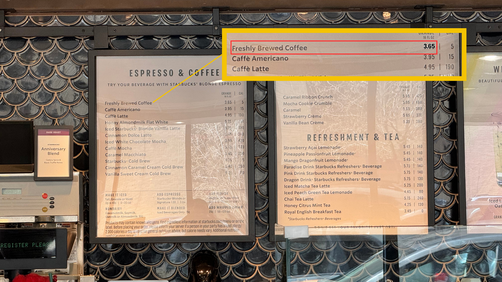
Freshly Brewed Coffee: $3.65
Prime, high-traffic real estate → $3.65 for a basic brewed coffee. The captive foot traffic is the barrier.
Two Blocks Away — Same Coffee, $2.95
A store farther from the foot-traffic hub.

Freshly Brewed Coffee: $2.95
Same coffee, $0.70 cheaper — the gap is the location premium. Control the prime spot, and you control the price.
Control Over the Key Factor of Production — AI Chips

One 8×B200 server: $430,500 — the physical silicon.
In the AI era, the critical input isn’t crude oil — it’s specialized semiconductor hardware.
Share of the global AI accelerator chip market
$130B+ in data-center revenue in 2025 alone. Rivals are left scrambling for single-digit share.
The question: why can’t a rival just engineer a faster chip and steal the market back?
The Razor and the Razor Blade
The chip is the razor. The software is the razor blade — and that’s where the lock-in lives.
Above the surface — the Razor
Physical silicon (H100 / Blackwell GPUs). Interchangeable, bound by physics — a rival can match it.
Below the surface — the Razor Blade
CUDA software platform — the proprietary translation layer between developer code and the physical math of the chip.
While rivals chased silicon physics, Nvidia made CUDA the definitive programming language of global deep-learning research and enterprise deployment.
The Architecture of Software Lock-In
AI Developer
The switching cost: rewriting years of accumulated code, untangling massive software libraries, and retraining engineers on an entirely new programming interface.
Takeaway: a cheaper chip can’t win developers over — the labor cost and time delay of switching are catastrophic.
2 · Switching Costs & Network Effects
Switching cost — what you pay in money, time, or lost data to leave. Years of apps, an Apple Watch, iMessage, the blue bubble … ~58–60% of US users stay on iPhone, so Apple charges a 15–30% App Store cut.
Network effect — the product is worth more as more people use it. Consoles, social media, messaging → the market tips toward one platform, with no patent or grant required.
Network Good with Switching Costs
Your first console pulls in the next one.
Your first console → your friends on the same platform → your next console on the same platform.
Network good: a good whose value to each customer rises with the number of other people who use it.
Other examples: your first pharmacy, your first bank, your first credit card — each gets stickier as more people are on it.
Two-Sided Market with Switching Costs
An app store: two sides, one platform.
End users
App developers
App / game stores connect two sides — end users and developers — on one platform.
High switching costs make it hard to leave after you’ve bought apps — your library doesn’t come with you.
Contract Switching Costs
Switching costs occur when customers must give something up to switch to a competing product — here, a cash penalty for leaving early.
| Carrier | Smartphone fee | Basic phone fee |
|---|---|---|
| AT&T | $325 | $175 |
| Sprint | $350 | $200 |
| Verizon | $350 | $175 |
Early-termination fees (ETFs) for leaving a phone contract before it ends.
The fee depends on
- your contract terms & proration
- the time remaining
- the device you bought
A deliberate barrier to leaving — even when a rival is cheaper.
iPhone and Its Ecosystem
Market power
Millennials are the largest share of US iPhone users; Gen Z 61% and teens 82% adoption.
Usage & spending
89 interactions/day, 5.6 hrs/day; ~$154/yr on apps & subscriptions.
Dominance
The iPhone holds over 58% of the US smartphone market — the deeper the ecosystem, the higher the switching cost.
The Engineered Moat — Ecosystem Lock-In
The most insidious modern moats are engineered: tech giants intentionally inflate switching costs so neither consumers nor developers ever leave.
Each layer Apple adds raises the cost of leaving:
The blue bubble — iMessage social capital
Seamless Mac & AirDrop integration
Years of historical app purchases
Accumulated health & device data
$161B
estimated global App Store revenue in 2025 — engineered friction trapping a captive base of ~1 billion people.
The Architecture of the Walled City
Path A — digital goods
In-app purchases & subscriptions → the 15–30% App Store tax.
Path B — physical services
Food delivery, rides → the 0% exemption. No cut taken.
Why let food trucks operate tax-free? The walls are made of code, not stone. Apple waives the tax on essential physical services — if people can’t eat or commute through the ecosystem, they’ll abandon it. The exemption is calculated ecosystem preservation.
Behavior, Not Just Size, Violates Antitrust Law

Having a monopoly is legal. It’s the abusive, exclusionary behavior — not the size — that breaks the law.
DOJ Sues Apple — Monopolizing Smartphone Markets

The DOJ’s 2024 case lists five exclusionary tactics — blocking super-apps, suppressing cloud gaming, degrading cross-platform messaging, hobbling non-Apple watches, and limiting third-party wallets.
The real question: is Apple’s exclusion of cross-platform features enhancing user experience, or just boosting iPhone sales? The DOJ argues the latter.
“Buy Your Mum an iPhone”
Asked why videos from an Android relative look bad, Tim Cook’s answer: “Buy your mom an iPhone.” — lock-in: a genuinely better ecosystem, or engineered friction?
Barriers to Switch — the Walled Garden

“It’s fine to build a beautiful garden for users to enjoy — but a company should also leave a window to the outside world, because there may be a better view beyond the wall. If the firm keeps the door open, it will greatly increase consumer surplus.”
3 · Product Differentiation & Branding
Make the product feel unique — and competition softens into pricing power.
Tesla
Early self-driving lead + a proprietary Supercharger network legacy automakers couldn’t match.
Red Bull
Extreme-sports identity so strong rivals can’t enter — despite trivially low production cost.
Rolex · Mercedes
Decades of brand image → prices far above production cost, sustained by perception alone.
Apply Differentiation is the weakest barrier — it’s the whole story of Chapter 13 (monopolistic competition), where rivals can enter with their own twist. Here it’s one ingredient in a bigger moat.
Innovation → Product Differentiation
Tesla Autopilot — self-driving as the differentiator.
Tesla Autopilot: self-driving capability sets a new market standard rivals scramble to match.
Product differentiation: a genuinely unique product lets a firm command premium prices.
Result: higher profitability and a defended market position.
Marketing → Product Differentiation

Red Bull’s extreme-sports spectacles. (Click to play.)
Strong brand identity: Red Bull’s positioning makes it hard for rivals to enter — despite a near-zero production cost.
The entire price premium is brand, not the liquid in the can.
Example: Tesla Supercharger
The Supercharger network — three moats in one.
Control of a key input → prime charging locations.
Charging network → switching costs (leave Tesla, lose the network).
More chargers → lower ATC (economies of scale).
One product, three reinforcing moats at once — the sources of monopoly power rarely come alone.
4 · Economies of Scale & Natural Monopoly
Natural monopoly — one firm can supply the whole market at lower average cost than two could. Arises with very high fixed cost + very low marginal cost.
Electric grid. ~$21.9B/yr US fixed cost; the cost of one more kWh is tiny. Two competing grids = both charge more.
Starlink. ~$10B+ sunk, 8,300+ satellites, 10M+ subscribers (2026). One more subscriber ≈ the cost of mailing a dish. A rival must rebuild the whole constellation.
Example: Electricity Transmission
Generation → Transmission ($21.9B/yr) → Distribution — one company can wire all of Boston’s 279,495 homes.
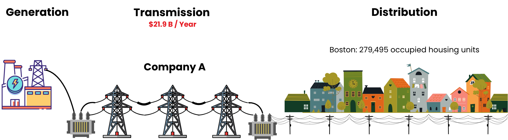

A second $21.9B grid would split the customers → both firms’ ATC rises. One firm is cheaper — a natural monopoly.
Natural Monopolies
A natural monopoly is an extreme economy of scale: LRATC declines continuously as output rises.
Efficient as one firm — cheapest for a single firm to make the whole industry output.
High fixed cost, low MC — the grid is huge to build, ~free to use.
Splitting raises cost — two firms each duplicate the fixed cost: ATC jumps $100 → $200.
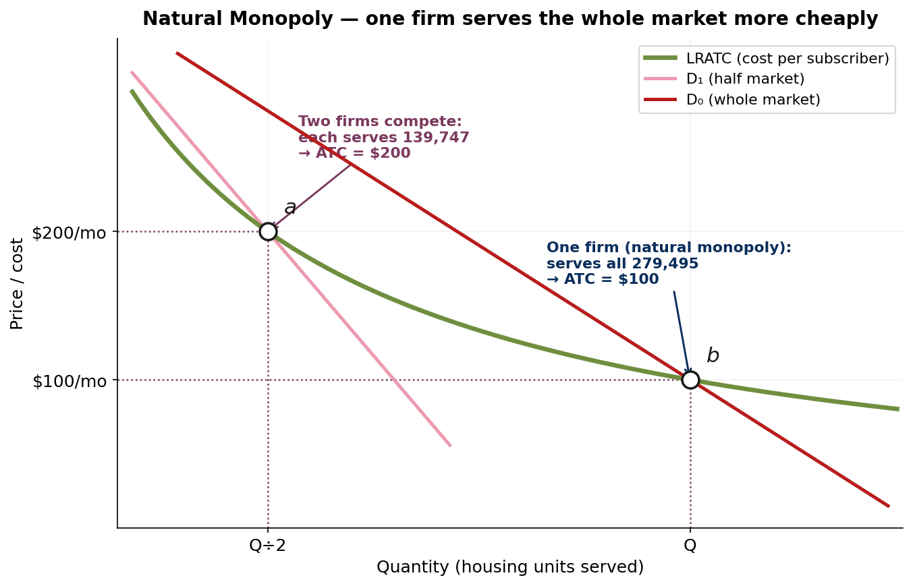
Case Study — SpaceX’s Starlink
Low-Earth-orbit internet — a 21st-century natural monopoly.
$10 Billion
The sunk cost — launching thousands of satellites + proprietary rockets.
10 Million
The scale — active subscribers by February 2026.
The Math of Zero Marginal Cost

The competitor’s dilemma: a rival spends $10B to build a parallel constellation, then must split the global customers. Neither firm gets enough to cover its $10B debt — both go bankrupt.
The math dictates only one survives. That is a natural monopoly.
5 · Government-Created Monopoly
The state grants exclusivity: USPS first-class mail, water franchises, NYC taxi medallions (once >$1M before Uber).
Patents & copyrights are the big ones — a 20-year exclusive window to recoup R&D. Without them, rivals copy on day one and free-ride.
One drug, one patent — Ozempic / month
| United States | $969 |
| Germany | $59 |
| India (no patent) | $14 |
| Manufacturing cost | < $5 |
Same molecule, same factory — the price gap is entirely the patent. We’ll quantify it with the Lerner Index at the end.
Government Franchise — Water Companies
A municipal water-treatment plant.
Water companies are typically granted special government franchises by state or local governments.
One set of pipes per town — a natural monopoly the government licenses to a single provider.
Government Franchise — Postal Services

The USPS holds an exclusive franchise for delivering regular first-class mail to your mailbox.
That exclusivity contrasts with packages & expedited mail, where FedEx and UPS compete freely.
Government IP — Copyright

A copyright protects ideas — books, music, art, software code — so creators benefit from their work.
It lets Dan Harmon & Justin Roiland, creators of Rick & Morty, earn royalties on every episode (new or repeated).
Government IP — Patents
Patents give inventors of new products or processes legal protection for a limited period — usually 20 years.
Vital in pharma, tech, and auto manufacturing — the patent window is what makes huge R&D bets worth taking.
Beyond Patents — Trade Secrets
Coca-Cola’s formula — the classic trade secret.
A trade secret gives a competitive edge because the information isn’t publicly known — and it can outlast a 20-year patent.
Not registered with any government agency — protection relies entirely on keeping it confidential.
Licensing & Government Regulation
NYC taxi medallions — a license that capped the number of cabs.
Governments restrict entry through licenses — a NYC taxi medallion once cost over $1M before Uber broke the cap.
When the state grants a monopoly, it usually also regulates the price (utility commissions) — the trade-off for blocking competition.
Anatomy of a Digital Monopoly
Google, Apple, Amazon, Nvidia rest on three interlocking pillars:
1. Algorithmic market-making — set dynamic prices & shape demand in real time.
2. Ecosystem lock-in — capture user intent, build insurmountable switching costs.
3. Economies of scale — turn huge fixed capital into zero-marginal-cost expansion.

When all three reinforce each other, the moat looks permanent. Whether it really is — that’s §11.9 (entry can still dissolve it). A few firms inside the moat → oligopoly; many with differentiated products → monopolistic competition — both Chapter 13.
The Anatomy of a Digital Monopoly
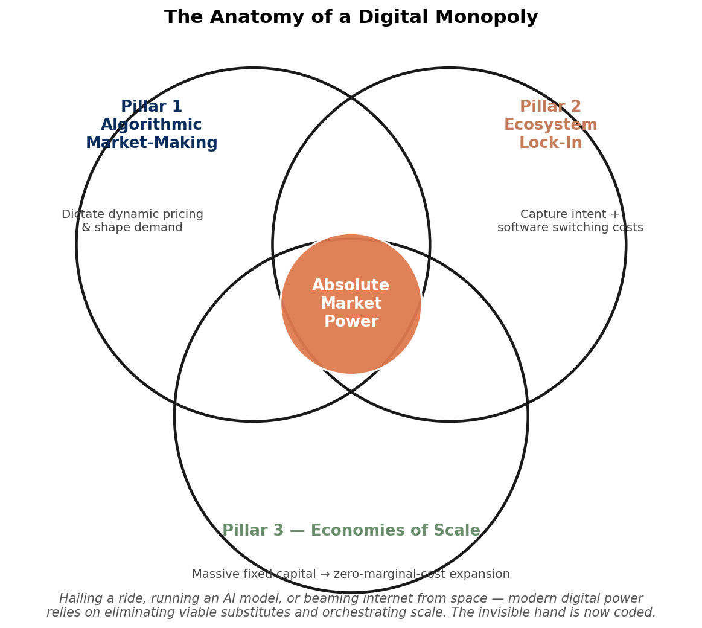
The strongest modern moats combine all three pillars at once:
1. Algorithmic market-making — set prices, shape demand.
2. Ecosystem lock-in — insurmountable switching costs.
3. Economies of scale — fixed capital → zero-MC expansion.
The invisible hand is no longer invisible — it is coded.
§11.3
Marginal Revenue Below Price
\(MR(q) = P(q) + q\,P'(q) = P\left(1 + \dfrac{1}{\varepsilon_D}\right)\)
The Monopolist’s Demand Curve

One island, one airline — fill all 50 seats only by dropping the fare to $200.
The monopolist’s demand curve slopes downward: to sell more, it must cut the price (unlike Ch 10’s flat price-taker demand).
A monopolist faces the market demand curve — it is the sole producer, so market demand = the firm’s demand.

What Price to Charge?

Price $344 → 10 seats sell
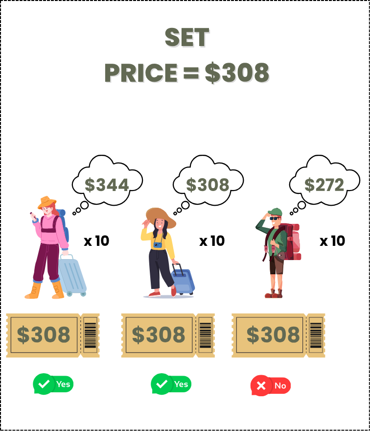
Price $308 → 20 seats sell
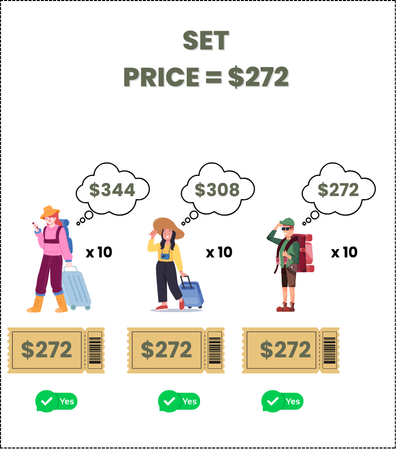
Price $272 → 30 seats sell
Cut the fare and more seats sell — but the airline earns $36 less on every seat it could have sold dear. That tug-of-war (next slide) is why MR < P.
The Monopolist Faces the Whole Demand Curve
Quantity effect (+) — revenue from the new unit sold.
Price effect (−) — revenue lost on every unit that used to sell higher.
Net: MR < P at every \(Q\) — the MR curve lies below demand, twice the slope.
One island, one runway, one airline. FC = $2,000, MC = $56/passenger; to sell more seats it must drop the fare for all.
| Q | P | TR | TC | ATC | MR | MC | Profit |
|---|---|---|---|---|---|---|---|
| 10 | $344 | $3,440 | $2,560 | $256 | — | $56 | $880 |
| 30 | $272 | $8,160 | $3,680 | $123 | $200 | $56 | $4,480 |
| 40 | $236 | $9,440 | $4,240 | $106 | $128 | $56 | $5,200 |
| 50 | $200 | $10,000 | $4,800 | $96 | $56 | $56 | $5,200 |
| 60 | $164 | $9,840 | $5,360 | $89 | −$16 | $56 | $4,480 |
| 90 | $56 | $5,040 | $7,040 | $78 | −$232 | $56 | −$2,000 |
Profit peaks at Q = 50, where MR = MC = $56. Read the price up on demand: P = $200. Profit = (P − ATC) × Q = ($200 − $96) × 50 = $5,200.
Seeing It on the Graph — MR Below Price
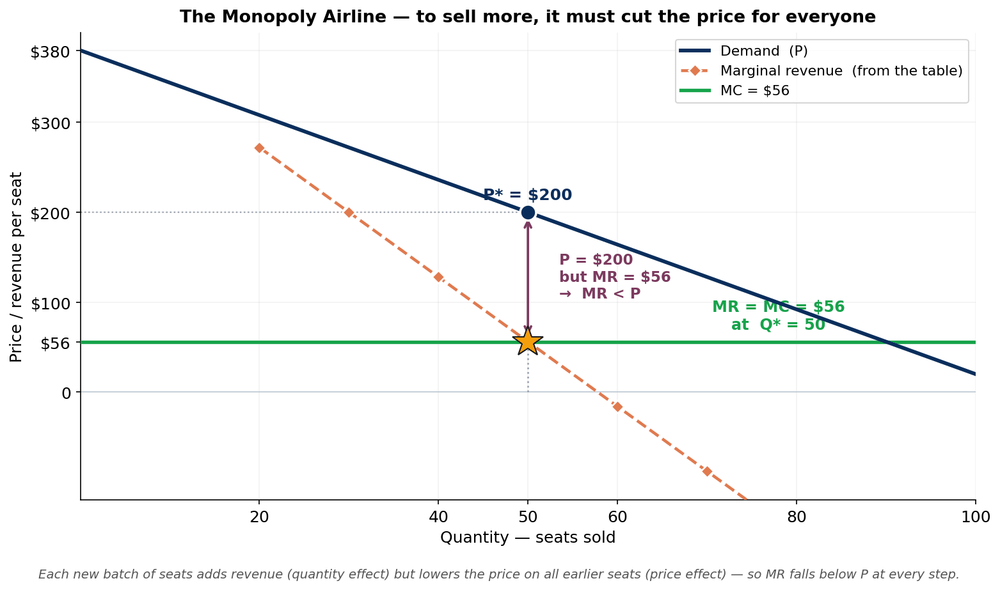
Demand slopes down. The MR ledger (orange) falls twice as fast — and lands far below price.
At Q* = 50, the running MR crosses MC = $56 (gold star). But the price is read off demand: P* = $200.
The gap is the point: P = $200 while MR = $56. Never read price off the MR curve.
Why Is the 51st Unit Worth Less to a Monopolist?
A price-taker's 51st unit adds exactly the price: the price doesn't move, so \(MR = p\). That was Ch 9.
A monopolist's 51st unit adds the price minus the price cut needed to sell it — and that cut applies to every unit already being sold:
\(MR = \underbrace{P(q)}_{\text{quantity effect}} + \underbrace{q\,P'(q)}_{\text{price effect } < 0}\)
The first term is the revenue from the new sale at the new price. The second is the revenue lost on the \(q\) units the firm now sells for less. Since \(P'(q) < 0\), the sum is strictly below \(P\): the \(MR\) curve lies under demand at every \(q > 0\).
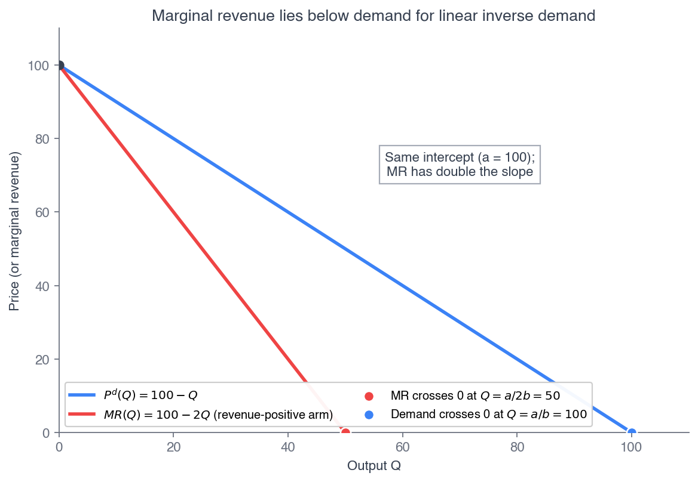
Fig 11.2 — \(MR\) lies strictly below demand for \(q > 0\).
Calculus Corner 11.1 — MR and the Inverse-Elasticity Rule
Total revenue is \(TR(q) = P(q)\cdot q\). Differentiate with the product rule:
\[ MR(q) = P(q) + q\,P'(q) \]
Factor out the price to expose the elasticity:
\[ MR = P\left(1 + \frac{1}{\varepsilon_D}\right) \]
where \(\varepsilon_D = \dfrac{dQ}{dP}\cdot\dfrac{P}{Q} < 0\) for downward-sloping demand.
Two limiting cases tie it together:
\(|\varepsilon_D| \to \infty\) (perfectly elastic = price-taker): \(1/\varepsilon_D \to 0\), so \(MR \to P\). Exactly Ch 9.
\(|\varepsilon_D| = 1\) (unit-elastic): \(MR = 0\). Total revenue is at its peak — one more unit adds nothing.
\(|\varepsilon_D| < 1\) (inelastic): \(MR < 0\). Revenue is falling as the firm sells more.
Linear Demand: Same Intercept, Twice the Slope
For linear demand \(P(q) = a - bq\), we have \(P'(q) = -b\), so:
\(MR(q) = a - bq + q(-b) = a - 2bq\)
Commit this to memory: linear \(MR\) has the same vertical intercept \(a\) and twice the slope of demand. It crosses the horizontal axis at \(q = a/(2b)\) — exactly half the demand intercept \(q = a/b\).
Heads Up 11.1
\(MR = P\) only at \(q = 0\). A common trap is to set \(MR = P\) at the optimum, as if the firm were a price-taker. For linear demand, \(MR = P\) requires \(a - 2bq = a - bq\), i.e. \(q = 0\). The curves cross only at the vertical intercept; at every positive \(q\), \(MR\) lies strictly below \(P\). If your FOC has \(MR = P\), recompute.
Two Sign-Convention Traps
Heads Up 11.2 — signed vs absolute elasticity
Demand elasticity \(\varepsilon_D < 0\), so \(-1/\varepsilon_D > 0\). Some books write \(L = 1/|\varepsilon_D|\); this book uses signed \(\varepsilon_D\) and writes \(L = -1/\varepsilon_D\). They are arithmetically identical.
When you see \(\varepsilon_D = -2\), the predicted markup is \(-1/(-2) = 0.5 = 50\%\).
Heads Up 11.3 — never operate where demand is inelastic
If \(|\varepsilon_D| < 1\) at some \(q\), then \(MR(q) < 0\) — every extra unit reduces total revenue. A profit-maximizer would cut \(q\): that raises revenue and lowers cost.
The optimum always lies in the elastic region, \(|\varepsilon_D| > 1\). If your candidate has \(|\varepsilon_D| \le 1\), recompute.
Both traps come from the same place: \(\varepsilon_D\) is negative, and the interesting boundary is \(|\varepsilon_D| = 1\), where \(MR = 0\) and total revenue peaks. To the elastic side, the firm still gains from selling more; to the inelastic side, it loses.
§11.4
The Profit-Max FOC
\(\dfrac{d\pi}{dq} = MR(q) - MC(q) = 0 \iff MR = MC\)
Produce Until Marginal Revenue Meets Marginal Cost
Profit is revenue minus cost. Differentiate and set to zero:
\(\pi(q) = P(q)q - C(q) \;\Rightarrow\; MR(q) = MC(q)\)
Identical logic to Ch 9's \(p = MC\) — produce until the next unit's revenue contribution equals its cost — but with \(MR\) replacing \(p\) because the firm is no longer a price-taker.
The recipe: (1) read \(MC\) off the cost function; (2) read \(MR\) off inverse demand; (3) set \(MR = MC\), solve for \(Q_M\); (4) read \(P_M = P(Q_M)\) off the demand curve.
Step through the worked airline example: \(MR = MC\) sets \(Q^* \approx 45\); read \(P^*=\$218\) up on demand.
Drag the Quantity: Find Where \(MR = MC\)
Demand \(P = 380 - 3.6Q\); \(MR = 380 - 7.2Q\); \(MC = \$56\) (the airline example from the last slide). Drag \(Q\): the green rectangle is \((P-MC)\,Q\); it is largest at \(Q_M = 45\) \((P_M=\$218)\), where \(MR = MC\). Push \(Q\) toward the competitive \(Q_C = 90\) and the red deadweight-loss triangle shrinks to zero.
Walkthrough 11.1 — Linear-Demand Monopoly End-to-End
Problem. A monopolist faces \(P(Q) = 100 - Q\) and constant \(MC = 20\). Find \(Q_M\), \(P_M\), profit, and the deadweight loss vs the competitive benchmark.
Set up & solve
\(TR = (100-Q)Q\), so \(MR = 100 - 2Q\). FOC \(MR = MC\): \(100 - 2Q = 20 \Rightarrow Q_M = 40\).
Price: \(P_M = 100 - 40 = \$60\). Profit: \((P_M - MC)Q_M = (60-20)(40) = \$1{,}600\).
Competitive benchmark \(P = MC\): \(100 - Q = 20 \Rightarrow Q_C = 80\), \(P_C = \$20\).
Deadweight loss & checks
\(DWL = \tfrac12(P_M - MC)(Q_C - Q_M) = \tfrac12(40)(40) = \$800\) — the triangle over the un-traded units.
Check elasticity: \(\varepsilon_D = (-1)(60/40) = -1.5\), so \(|\varepsilon_D| = 1.5 > 1\) ✓. Markup \(L = 40/60 = 0.667 = -1/\varepsilon_D\) ✓.
Takeaway. For linear demand and constant \(MC\), the monopolist produces exactly half the competitive quantity (\(40\) vs \(80\)). The price wedge generates \$800 of deadweight loss — value that simply disappears.
The Welfare Picture — Who Gets the Surplus?
Same numbers as Walkthrough 11.1: \(P^d = 100 - Q\), \(MC = 20\), \(Q_m = 40\), \(Q_c = 80\).
Surplus decomposition
B = $1,600 is exactly the monopoly profit and C = $800 the deadweight loss from Walkthrough 11.1. Market power turns the competitive triangle \(A+B+C\) into \(A\) for consumers and \(B\) for the firm — while \(C\) simply vanishes.
Common Misconception
“A monopolist charges the highest possible price.”
It could charge $344 — but then it sells only 10 seats and earns just $1,440. The profit-maximizing price is $200, well below the top of the demand schedule.
A monopolist doesn’t charge as much as possible — it charges where MR = MC, which pins it to one specific point on the demand curve. Higher price ⇒ too few buyers; lower price ⇒ margin too thin.
Interactive — The Monopoly Airline (Figure 11.1)
Drag Q: price falls along demand, and because every seat must be cut to the same price, MR < P. Profit peaks where the running MR meets MC = $56 — at Q* = 45, P* = $218.
Monopoly Is Not a Guarantee of Profit
If demand sits entirely below ATC, the monopolist still produces at MR = MC — but the price it reads off demand is below ATC. It loses money.
Short run: keep operating if P > AVC. Long run: exit — exactly like a competitive firm.
Monopoly gives the power to restrict output and raise price. It does not give the power to create demand that isn’t there. Being the sole seller of something nobody wants is not profitable.
Also a myth: “Monopoly is illegal.” Having one is legal. Abusing anticompetitive tactics to get or keep one is not — that’s §11.5.
A Monopoly Is Not Guaranteed Economic Profit
Good Season — travelers flock to the island
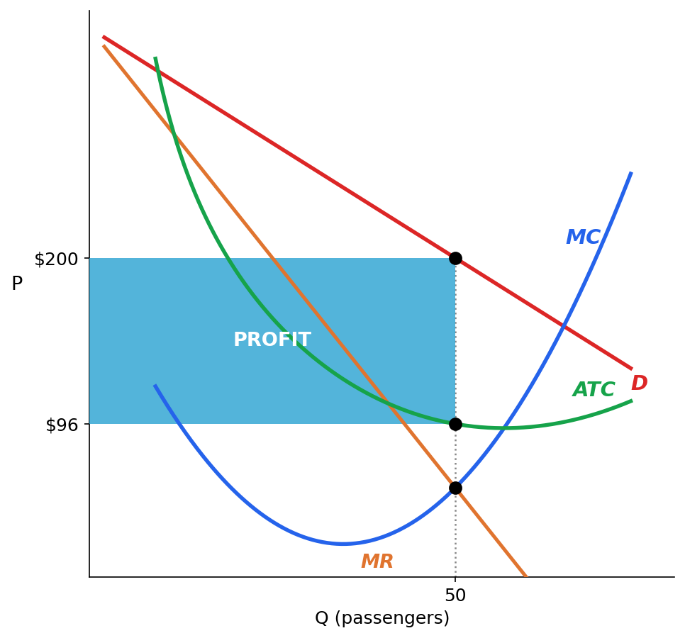
High demand → 50 seats @ $200, ATC $96 → profit $5,200
V.S.
Storm Season — no one flies
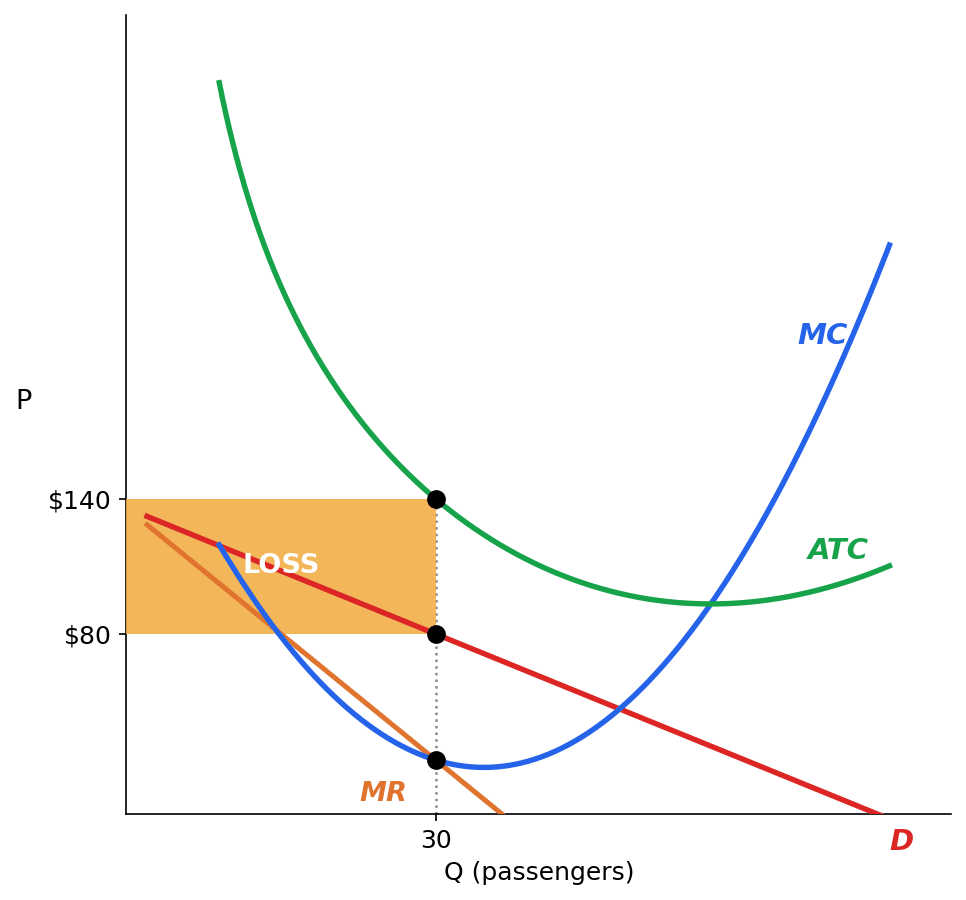
Demand collapses → 30 seats @ $80, ATC $140 → loss $1,800
Same plane, same cost curves — only demand moved. With fewer flyers the fixed cost spreads over fewer seats, so ATC rises and price slips below it. Being the only seller guarantees neither profit nor loss.
Example — A Monopoly That Went Broke
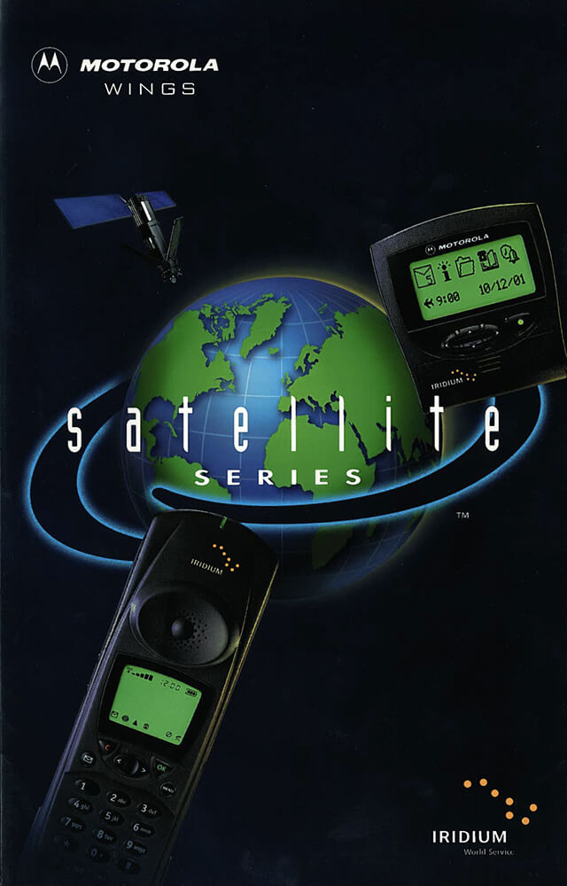
Motorola’s Iridium “Satellite Series” — the $3,000 handset (1999)

Iridium (1998): Motorola built the only global satellite-phone network — a textbook monopoly — for ~$5 billion.
A $3,000 brick-sized handset, calls up to $7/minute. Almost no one bought — ~50,000 subscribers, not the millions it needed. Bankrupt in 9 months.
Sole seller, zero rivals — and it still lost money. Demand sat below ATC, so even MR = MC pricing couldn’t cover cost.
§11.5 — the central tool
The Lerner Index
Markup as inverse elasticity: \(\dfrac{P - MC}{P} = -\dfrac{1}{\varepsilon_D}\)
Read Demand Elasticity Off a Price Tag
Define the markup as a fraction of price — the Lerner index \(L = (P-MC)/P\). Substitute the FOC \(MR = MC\) and the inverse-elasticity form:
\(P\!\left(1 + \tfrac{1}{\varepsilon_D}\right) = MC \;\Rightarrow\; \dfrac{P-MC}{P} = -\dfrac{1}{\varepsilon_D}\)
The profit-maximizing markup is exactly the negative inverse of demand elasticity. It's local — it holds at the operating point — but there it's exact for any smooth demand, not just linear.
\(\varepsilon_D = -2 \Rightarrow L = 0.5\) (price 50% over \(MC\)). \(\varepsilon_D = -10\) (nearly a price-taker) \(\Rightarrow L = 0.1\). More elastic demand → smaller markup.
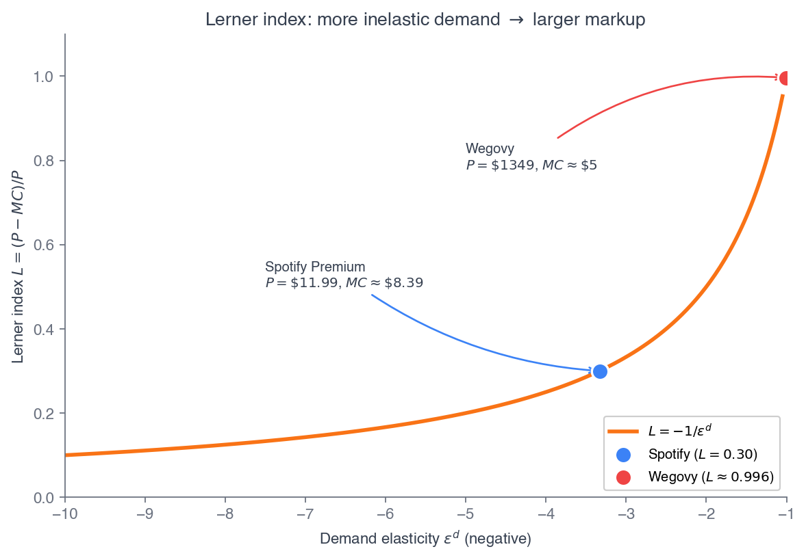
Fig 11.5 — markup \(L = -1/\varepsilon_D\); Spotify and Wegovy bracket the range.
Walkthrough 11.2 — Spotify Premium's Lerner Index
Problem. US Premium Individual lists at \(P = \$11.99\). Spotify pays ~70% of revenue to artists/labels; treat the per-subscriber royalty as \(MC\). Find \(L\), the implied \(\varepsilon_D\), and compare to academic estimates.
Set up & solve
\(MC = 0.70 \times 11.99 = \$8.39 \approx \$8.40\).
\(L = \dfrac{11.99 - 8.40}{11.99} = \dfrac{3.59}{11.99} = 0.300\).
Implied elasticity: \(\varepsilon_D = -1/L = -1/0.300 = -3.33\).
Compare & check
Published estimates for paid-streaming demand cluster in \(\varepsilon_D \in [-2.0, -1.4]\). At \(\varepsilon = -1.7\), the predicted markup is \(L = 0.588\) — far above Spotify's observed \(0.300\).
Check: \(|\!-\!3.33| > 1\) ✓ (elastic). The wedge is diagnostic, not a refutation — Heads Up 11.4 explains why.
Takeaway. Spotify's 30% markup implies demand elasticity \(-3.33\) — more elastic than published estimates. Either the firm isn't at the static profit-max FOC, or the simple model is missing something. The gap tells you where to look.
Heads Up 11.4 — Observed Markups May Diverge from \(-1/\varepsilon_D\)
\(L = -1/\varepsilon_D\) is what theory predicts if the firm sits at the static profit-max FOC. Real firms often don't, for at least five reasons:
1. List \(\ne\) effective price. Spotify's ARPU is ~€4.70 — far below the \$11.99 list — because the base spans Family, Duo, Student, and cheap emerging-market plans. Compute \(L\) at ARPU and \(\varepsilon_D \approx -2.87\).
2. Free-tier substitution. Spotify's ad-supported free tier is an unusually cheap substitute. A churned subscriber often drops to Free, not to Apple Music — raising effective elasticity.
3. Competition from substitutes. Apple, Amazon, YouTube Music, Tidal, podcasts, and radio all bound the price. The "monopoly" framing is a residual-demand approximation — Ch 13 puts the rivals back in.
4. Dynamic pricing. Spotify trades static profit for user-base growth and lock-in. A firm pricing below its static optimum to grow looks like a low-Lerner outlier even if long-run profit is higher.
5. Strategic preemption. A high price invites entry; Spotify's committee forecasts competitor responses we don't see. Bottom line: the Lerner equation tells you what should hold under the simplifying assumptions — deviations are diagnostic, not refutations.
Walkthrough 11.3 — Wegovy at the Ceiling of Monopoly Power
Problem. Novo Nordisk's Wegovy lists at \(P = \$1{,}349.02\)/month. A 2024 JAMA Network Open study put sustainable cost at \$0.89–\$72.49/month; take \(MC = \$5\). Find \(L\), implied \(\varepsilon_D\), and interpret.
Set up & solve
\(L = \dfrac{1349.02 - 5}{1349.02} = \dfrac{1344.02}{1349.02} = 0.9963\).
Implied elasticity: \(\varepsilon_D = -1/0.9963 = -1.004\). Just barely in the elastic region.
Interpret & postscript
A patented drug with no close substitute sits at the ceiling: price is almost entirely markup, and \(\varepsilon_D \approx -1\) confirms demand is just elastic enough for profit-max to make sense.
Feb 2026: Novo announced a cut to \$675/month (Jan 2027), preempting Medicare negotiation. New \(L = 670/675 = 0.9926\), \(\varepsilon_D = -1.007\) — still at the unit-elastic boundary.
Takeaway. Spotify (\(L=0.30\)) and Wegovy (\(L=0.996\)) bracket the realistic range. The implied elasticity near \(-1\) is exactly where the static monopoly model predicts a no-substitutes patent monopoly will sit.
Reacting to Market Changes — When Marginal Cost Rises
A price-maker re-optimizes when costs change — just like a price-taker. Suppose a fuel-price spike lifts the airline’s marginal cost from \(\$56\) to \(\$80\) per seat. Re-run \(MR = MC\) on the same demand \(P = 380 - 3.6Q\):
\(P = 380 - 3.6(41.7) = \$230\)
\(MC\uparrow \Rightarrow Q\downarrow,\ P\uparrow\) — but \(P\) rises only \(\$12\) on a \(\$24\) cost jump. With a downward-sloping \(MR\), the monopolist passes through about half the cost increase.
Higher \(MC\) (\(MC_1\!\to\!MC_2\)) moves the optimum from \(b\) to \(d\): less output, a higher price.
Reacting to Market Changes — When Demand Rises
Now a positive shock — a new nonstop route doubles the addressable market — shifts demand out by 20M seats at every price. The new inverse demand is
\(P = 452 - 3.6Q\)
Marginal cost is back at \(\$56\). Follow the same three-step procedure.
Derive marginal revenue
\(MR = 452 - 7.2Q\)
Set \(MR = MC\), solve for \(Q^*\)
\(452 - 7.2Q = 56 \;\Rightarrow\; Q^* = 55\)M
Read \(P^*\) up on demand
\(P^* = 452 - 3.6(55) = \$254\)
An outward demand shift raises both \(Q\) (\(45 \to 55\)M) and \(P\) (\(\$218 \to \$254\)).
When Demand Rotates — Price Sensitivity
A rotation in demand (a change in price sensitivity / elasticity) leaves a price-taker untouched but moves a price-maker.
Only \(S \cap D\) matters — rotating \(D\) keeps \(P_c^*, Q_c^*\) fixed.
Flatter (more elastic) \(D_2\) ⇒ lower markup: \(P_{m2}^* < P_{m1}^*\).
| Shock | Q | P |
|---|---|---|
| Marginal cost \(\uparrow\) | \(\downarrow\) | \(\uparrow\) (by < \(\Delta MC\)) |
| Demand \(\uparrow\) (parallel out) | \(\uparrow\) | \(\uparrow\) |
| Demand more elastic (rotation) | \(\uparrow\) | \(\downarrow\) |
For a price-taker, demand’s shape is irrelevant — only \(S \cap D\) matters. For a price-maker, shape is everything: more elastic demand shrinks the markup (the Cel-Ray vs Coca-Cola lesson). The engine is always \(MR = MC\), then read \(P\) up on demand.
Poll #1 — Two Firms, Same \(MC\). Who Charges More?
Firm A faces demand elasticity \(\varepsilon_D = -1.5\); Firm B faces \(\varepsilon_D = -4\). Both have the same constant \(MC\). Which firm sets the higher markup over marginal cost?
60 sec to vote
Answer: A — the less elastic firm charges more
The Lerner index depends only on elasticity: \(L = -1/\varepsilon_D\). Less elastic demand → bigger markup.
\( L_A = -\tfrac{1}{-1.5} = 0.667 \quad > \quad L_B = -\tfrac{1}{-4} = 0.25 \)
Trap C: equal \(MC\) does not mean equal markup — markup is set by elasticity, not cost. This is exactly why patented Wegovy (\(\varepsilon \approx -1\)) marks up 99% while Spotify (\(\varepsilon \approx -3.3\)) marks up only 30%.
Application — Netflix's Ad-Tier Hike, Revisited from Chapter 1
Chapter 1's Walkthrough 1.4 framed Netflix's Jan 2025 ad-tier hike (\$6.99 → \$7.99) as "compare the marginal revenue from the price increase to the marginal loss from churn." Ch 11 closes the loop — that was the \(MR = MC\) FOC, stated informally.
With 80M ad-tier subs, a \$1 hike, and +2 pp churn: net \(\Delta\) revenue \(= 80\text{M}\times 98\%\times\$12 - 80\text{M}\times 2\%\times\$84 = \$806\text{M} - \$134\text{M} = +\$672\text{M}\).
The hike's marginal-revenue contribution was positive — the firm was not yet at its profit-max price. That Netflix keeps raising prices and keeps adding subscribers is its revealed-preference statement that \(MR = MC\) is still slack on the upside.
+\$672M
Net revenue from the 2025 hike
~94M
Ad-tier MAU by Q1 2026
\$8.99
Mar 2026 ad-tier price (next hike)
9.5 pp
Churn-per-\$ that would zero the gain
Theory and Data 11.1 — The Rise of US Aggregate Markups
De Loecker–Eeckhout–Unger (2020, QJE)
Average markup of price over \(MC\) across US public firms rose from ~\$1.21 (1980) to ~\$1.61 (2016). In Lerner terms (\(L = (\text{markup}-1)/\text{markup}\)), the aggregate index roughly doubled, ~0.17 → ~0.38, over 36 years.
Concentrated in services, information, retail, and finance — the "superstar firm" story. Manufacturing rose only modestly.
But the measurement is contested:
- Bond et al. (2021): revenue-based \(MC\) estimates can be unidentified without quantity data — the trend may reflect input changes, not market power.
- Raval (2023): markups from labor inputs vs materials inputs frequently disagree by large margins.
Two facts survive: markups vary enormously across industries (near 0 in agriculture to \(>0.85\) in patented pharma), and the distribution has spread out over time.
Walkthrough 11.4 — Inverse-Elasticity Rule Across Three Firms
Problem. Three firms with \(\varepsilon_D = -1.5,\ -2,\ -3\), all with constant \(MC = 10\). Find each profit-max markup and price. Use \(P = MC/(1 + 1/\varepsilon_D)\).
Solve each firm
| \(\varepsilon_D\) | \(L = -1/\varepsilon_D\) | \(P = MC/(1-L)\) |
|---|---|---|
| \(-1.5\) | \(0.667\) | \(10/(1/3) = \$30\) |
| \(-2\) | \(0.500\) | \(10/0.5 = \$20\) |
| \(-3\) | \(0.333\) | \(10/(2/3) = \$15\) |
Check the direction
More elastic demand → smaller markup → lower price. Firm 1 (least elastic, \(-1.5\)) has the highest markup (66.7%) and price (\$30); Firm 3 (most elastic, \(-3\)) the lowest (33.3%, \$15). ✓
All three have \(MC = 10\) — identical costs, very different prices. Cost doesn't set the markup; elasticity does.
Takeaway. The Lerner index is a direct measurement of elasticity for a profit-maximizing firm: observe the markup, infer the elasticity. That's why it's the central tool in industrial organization — it converts price-cost margins into elasticities that are otherwise hard to observe.
§11.6
Deadweight Loss from Monopoly
\(DWL_M = \displaystyle\int_{Q_M}^{Q_C}\!\big[P^d(q) - MC(q)\big]\,dq\)
The Units That Never Trade
Ch 10 proved the competitive \(Q_C\) maximizes total surplus. A monopolist sets \(MR = MC\) instead of \(P = MC\), producing \(Q_M < Q_C\). The units between \(Q_M\) and \(Q_C\) would have traded competitively — their value to consumers exceeds their cost — but don't. That lost surplus is the deadweight loss.
Recall from Principles — 1116 §11.3
"The Welfare Cost of Monopoly" drew this as the triangle between demand and \(MC\), bounded by \(Q_M\) on the left and \(Q_C\) on the right. In Principles you measured it as a triangle; here we measure it as an integral — which generalizes to non-linear demand and rising \(MC\).
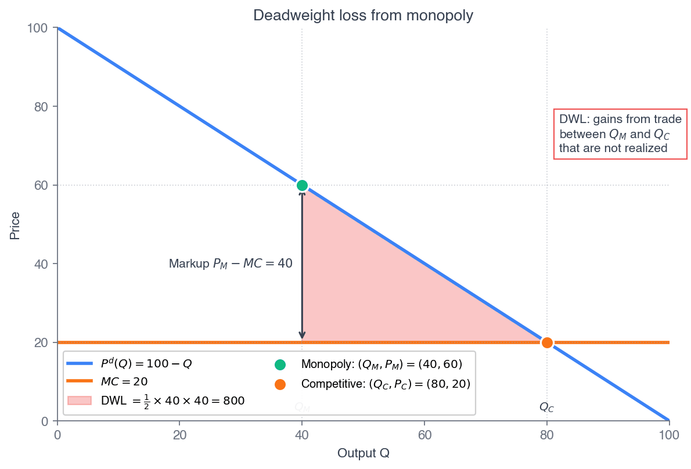
Fig 11.4 — the Harberger triangle between \(Q_M\) and \(Q_C\).
Calculus Corner 11.2 — Deadweight Loss as an Integral
The deadweight loss is the un-captured surplus on the un-traded units:
\[ DWL_M = \int_{Q_M}^{Q_C}\!\big[P^d(q) - MC(q)\big]\,dq \]
For \(P^d = a - bq\) and constant \(MC = c\), it reduces to the Harberger triangle:
\[ DWL_M = \tfrac12(P_M - c)(Q_C - Q_M) \]
The integrand \(P^d - MC\) is positive on \([Q_M, Q_C]\) — by definition, demand lies above \(MC\) where the competitive market would still produce. The integral sums those gaps.
We've now seen these surplus integrals four times: Ch 2 introduced them, Ch 3 used them for tax DWL, Ch 10 proved the welfare theorem, and Ch 11 measures the loss from a price-cost wedge.
For convex \(MC\) (rising at an accelerating rate), the triangle underestimates the true integral; the gap closes faster than linearly near \(Q_C\).
Walkthrough 11.5 — DWL with Rising \(MC\): Integral vs Triangle
Problem. \(P^d(Q) = 100 - Q\), \(MC(q) = 20 + 0.1q\). Find \(Q_M\), \(P_M\), \(Q_C\); compute DWL exactly by integration and compare to the triangle.
Set up & solve
\(MR = 100 - 2Q\). FOC: \(100 - 2Q = 20 + 0.1Q \Rightarrow Q_M = 80/2.1 = 38.10\), \(P_M = \$61.90\).
Competitive: \(100 - Q = 20 + 0.1Q \Rightarrow Q_C = 80/1.1 = 72.73\), \(P_C = \$27.27\).
Exact: \(DWL = \int_{38.10}^{72.73}[80 - 1.1q]\,dq = \$659.48\).
Triangle & comparison
Base \(= 72.73 - 38.10 = 34.63\). Height \(= P_M - MC(Q_M) = 61.90 - 23.81 = 38.09\). Triangle \(= \tfrac12(34.63)(38.09) = \$659.48\).
Exact \(= \$659.48\); triangle \(= \$659.48\). They agree — because \(MC\) is linear, so the integrand is linear and its area is exactly a triangle.
Takeaway. The Harberger triangle is exact whenever demand and \(MC\) are both linear. If \(MC\) rises convexly, the triangle underestimates; concavely, it overestimates. The integral is always the exact computation.
Theory and Data 11.2 — How Big Is the Welfare Cost of US Monopoly?
0.1%
Harberger (1954): DWL as share of GNP
5–10%
Edmond–Midrigan–Xu (2023): of consumption
Harberger used triangle methods on cross-sectional industry data and found monopoly was a nuisance, not a macro distortion. Modern GE models with heterogeneous firms find a welfare cost 50–100× larger.
Where does the gap come from? Two channels the triangle misses:
Misallocation: high-markup firms attract more capital and labor than the social optimum — resources end up in the wrong sectors.
Output-tax channel: a uniform markup acts like an economy-wide output tax, depressing aggregate consumption–leisure choice.
Both operate on the intensive and extensive margins — invisible to a partial-equilibrium triangle.
The Societal Tax: A 30% Price Floor
Apple extends its monopoly from the iPhone into the App Store — the only channel to reach an iPhone user. Its marginal cost to host one more app is fractions of a cent, yet it takes a 30% cut of every sale.
A 30% artificial price floor. The cut acts like a tax that raises every developer’s average variable cost. On thin margins, surrendering 30% of gross revenue makes the app unviable — so it never launches.
Consumers would value those apps above the cost to make them but below the post-cut price — so the transaction never happens. The software never built, the utility never felt, is the deadweight loss.
This deadweight loss is invisible — you only see it in what’s absent: each dashed outline is the app, the startup, that never launched.
Application — Ultra-Low-Cost Carriers Break Market Power
The entry of Ultra-Low-Cost Carriers (Spirit, Frontier, Ryanair) breaks the market power of incumbent airlines — pushing an airport market much closer to competition. Entry is the real-world antidote to monopoly pricing.
The ULCC playbook
Business model — extreme cost-consciousness to sustain shockingly low fares. Entry strategy — aggressively undercut the established carriers’ prices.
Prices fall, quantity rises. Fares on new ULCC routes drop by double-digit percentages, and the number of passengers flying those routes goes up substantially — the competitive benchmark in action.
Evidence (2011–2017)
The 5 US airports with the largest average fare drops all saw new or expanded ULCC presence:
| Houston (IAH) | −25% |
| Newark (EWR) | −24% |
| Las Vegas (LAS) | −22% |
| Minneapolis (MSP) | −22% |
| Los Angeles (LAX) | −21% |
ULCC Airlines — The Consumer Trade-Off
Passengers accept: fewer amenities — baggage fees, no free snacks, less legroom.
Passengers gain: access to flights more affordable than ever before.
Competition from ULCCs lowers prices and makes travel accessible to far more people — a significant increase in consumer surplus. The amenity cuts are a real cost, but for most flyers the fare savings dominate.
Spirit — the US ultra-low-cost model.
Ryanair — Europe’s ULCC pioneer.
The “Stripped” Economy — Damaged Goods
The flip side of versioning: a firm will deliberately make the cheap version worse — spending nothing, or even money, to degrade it — so high-WTP buyers refuse to trade down and pay for the premium tier.

Then. 1840s railways ran roofless third-class cars. Dupuit (1849): they did it “not to hurt the poor, but to frighten the rich” into buying first class.

Now. Ever-tighter “stripped” economy seats (and Basic Economy) keep the cheap tier just painful enough to upsell.
Rent-Seeking — Spending to Stay on Top
Rent-seeking — using real resources (lobbying, litigation, political influence) to capture wealth without creating any new wealth.
Because monopoly profits are huge, firms spend real money to defend them — money that builds nothing.
Meta alone kept ~87 lobbyists in Washington — about one for every six members of Congress. Pure economic waste.
Rent-Seeking Behavior
- Because monopolists earn economic profit, they have a strong incentive to protect that position from potential competition.
- Rent-seeking = behavior directed toward avoiding competition — spending real resources to capture wealth without creating any.
“Bill: No more airport.”
An incumbent lobbies to block a new airport — and the rival airlines it would bring. Resources spent fighting competition, not serving flyers.

The Economist (2018): U.S. health-care firms extract ~$65bn/year in rent-seeking excess profit.
The Protection Apparatus
Where the rent-seeking dollars actually go — and where they don’t.
R&D / Innovation
where it could have gone
$70M
2025 federal lobbying by Meta, Amazon, Microsoft, Google & Apple
Legal & Political Fortress
Meta keeps 87 lobbyists in D.C. — 1 for every 6 in Congress.
These millions produce no tangible goods — no better battery life, no smarter algorithms. They are pure societal waste dedicated to fortifying existing market power.
X-Inefficiency — No Pressure to Be Sharp
X-inefficiency — operating above minimum cost because no competitor forces you to be efficient.
Competition is a discipline. Remove it, and the firm drifts off its own cost curve — into overstaffing, bloat, and slack a rival would never allow.
Three faces of it — press ↓: a privatized airline, a postal monopoly, and a CEO’s $6,000 shower curtain.
X-Inefficiency in the Wild
British Airways — state-owned in the 1970s, it faced little competition, leading to overstaffing and bureaucratic inefficiencies and high operating costs. After privatization, productivity and cost efficiency improved.

USPS — its monopoly on first-class mail removes competition there, reducing incentives to cut costs or innovate → bureaucratic delays, high labor costs, and management slack.

X-Inefficiency — Slack at the Top
Dennis Kozlowski, former CEO of Tyco International, spent $2 million on a lavish birthday party for his wife — and bought personal extravagances like a $6,000 shower curtain.
With no competitor forcing discipline, slack and excess go unchecked — corporate resources burned on what creates no value.

The curtain now sits in the ACFE Fraud Museum.
The Innovation Defense — the Societal Ledger
Weigh monopoly’s costs against its justifications — the great open debate.
The Costs — Market Failures
Wealth transfer — charging $28k for a $3.3k chip.
Deadweight loss — the graveyard of un-built apps and un-made trades.
Resource waste — bloated management + $70M on defensive lobbying.
The Justifications — Market Fuel
Capital magnet — attracts the billions for high-risk infrastructure (Starlink’s $10B).
R&D subsidization — funds the 2.4×/yr growth in frontier AI (a ~$1B run).
Paradigm shifts — pushes past physical limits (thousands of satellites into orbit).
Evaluate DWL is a cost today; the innovation it funds is a benefit tomorrow. Which wins? The exact tension behind drug patents (§11.9). Press ↓ for the upside in detail.
Monopolies and the Incentive for Innovation
Potential benefit of monopolies: the prospect of monopoly profit — protected by patents & copyrights — can incentivize firms to invest in research & development,
leading to new products and technologies a zero-profit competitive firm could never fund.
Perfect Competition → A Local Monopoly
50 near-identical pizza shops in a three-mile radius — until one differentiates.
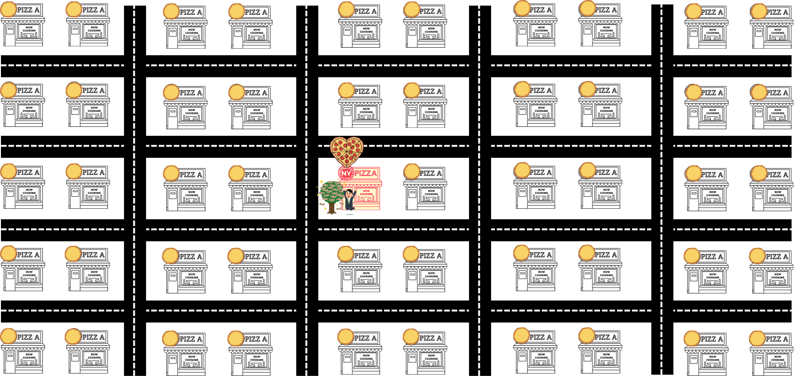
Innovation & differentiation are how a firm escapes the zero-profit crowd and carves out market power — the prize that motivates the effort.
Economies of Scale — Universal Service

Often criticized for inefficiency — yet one scaled network does what a fragmented market won’t: reach everyone.
The USPS will carry a letter to any address — Hawaii, Alaska, Guam, even a carrier at sea — for the price of a single stamp.
§11.7
Natural Monopoly
When the cost function itself forces one firm: \(c(Q) \le \sum_i c(q_i)\)
Regulating the Natural Monopolist
Natural monopolies have economies of scale so large that one firm serves the whole market at lower cost than several could. You can’t just “add competition” — so policy must pick how to regulate:
Public ownership — the government owns and operates the monopoly. (e.g., municipal water)
Regulated private ownership — a private firm operates under government price & quantity limits. (e.g., the electric utility)
Franchise the right to operate — award the market to the firm offering the most competitive price and output.
Whichever path, the regulator’s real lever is the price it lets the monopolist charge — so the next question is: which price?
Regulating the Natural Monopolist
Average-Cost Pricing Rule
- Require the monopolist to set price = average total cost (PR = ATC, at point b).
- The firm earns a normal profit, but price is higher and output lower than under marginal-cost pricing.
Regulation in Practice
- Often rate-of-return regulation (prices that ensure a normal return on investment),
- or price caps PR (maximum price limits).
- Estimating demand and cost curves accurately is challenging.

Regulating the Natural Monopolist
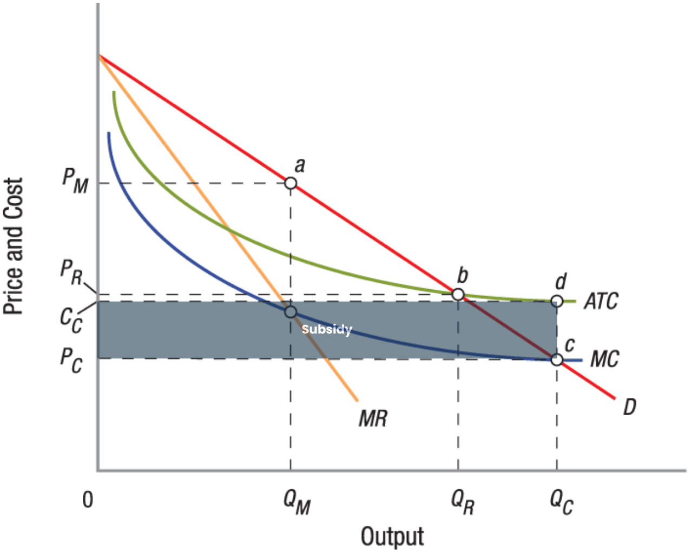
Amtrak is the textbook case: it runs persistent operating losses and depends on federal subsidies — price-near-MC made real.
When the Math of Cost Forces One Firm
Natural monopoly is a fact about the cost function, not a strategic choice — it is defined by subadditivity:
\(c(Q) \le \displaystyle\sum_{i=1}^n c(q_i)\) for any split \(\textstyle\sum_i q_i = Q\)
One firm producing \(Q\) costs no more than the same \(Q\) split across many firms. The classic recipe: positive fixed cost + constant \(MC\), giving \(ATC = F/q + \mu\), which falls forever.
Heads Up 11.5
Natural monopoly is a cost story, not a size story. A small market is a natural monopoly if fixed cost is large relative to demand. "Monopoly" (one firm exists) \(\ne\) "natural monopoly" (one-firm production is cost-minimizing).
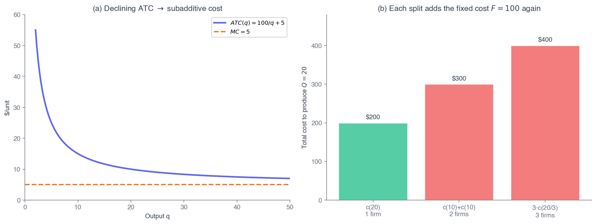
Fig 11.6 — declining \(ATC\): one firm always undercuts two.
Calculus Corner 11.3 — Subadditivity and the Failure of \(p = \min ATC\)
For \(c(q) = F + \mu q\), split \(Q\) across \(n\) firms:
\[ \sum_i c(q_i) - c(Q) = nF + \mu Q - (F + \mu Q) = (n-1)F > 0 \]
Subadditive at every \(Q\): splitting pays the fixed cost \(n\) times instead of once.
\[ ATC(q) = \tfrac{F}{q} + \mu, \quad \frac{dATC}{dq} = -\tfrac{F}{q^2} < 0 \]
\(\min ATC\) does not exist on \((0, \infty)\): \(ATC\) declines forever, approaching \(\mu\) only as \(q \to \infty\). There's no finite output where a competitive market can settle.
Chapter 10's free-entry condition \(p = \min LRATC\) fails. The cost function pushes the market toward concentration: one big firm pays \(ATC \to \mu\); many small firms each pay far more. The cost-minimizing structure is one firm — regardless of antitrust law.
Walkthrough 11.6 — Natural-Monopoly Cost Subadditivity
Problem. A firm has \(c(q) = 100 + 5q\). (a) Verify subadditivity at \(Q = 20\). (b) Show \(ATC\) is everywhere declining. (c) Confirm \(p = \min ATC\) has no solution.
Set up & solve
One firm at \(Q=20\): \(c(20) = 100 + 100 = \$200\). Two firms at 10 each: \(2(100+50) = \$300\). \(200 < 300\) ✓ — saving \(= \$100 = F\).
General: \(\sum c(q_i) - c(Q) = (n-1)(100) > 0\) for any \(n > 1\). Subadditive everywhere.
ATC & min check
\(ATC(q) = 100/q + 5\), \(dATC/dq = -100/q^2 < 0\) — strictly declining on \((0,\infty)\).
\(\lim_{q\to\infty} ATC = 5\), never achieved at finite \(q\). So \(p = \min ATC\) has no finite solution — no competitive equilibrium exists.
Takeaway. Positive fixed cost + constant \(MC\) is the textbook recipe for natural monopoly. The competitive \(p = \min ATC\) has no solution; the market necessarily concentrates. Whatever the policy response, it must take this as given — which is §11.8.
§11.8
Regulation Tradeoffs
Three regimes for the natural monopolist: unregulated, \(p = MC\), \(p = ATC\)
Walkthrough 11.7 — Three Regulatory Regimes Compared
Problem. Natural monopoly \(c(q) = 100 + 5q\) (\(F=100\), \(\mu=5\)), demand \(P^d(Q) = 50 - Q\). Compare (i) unregulated, (ii) cap at \(p = MC\), (iii) cap at \(p = ATC\).
| Regime | \(Q\) | \(P\) | \(\pi\) | DWL |
|---|---|---|---|---|
| (i) Unregulated \(MR=MC\) | 22.5 | \$27.5 | \$406 | \$253 |
| (ii) Cap \(p = MC = 5\) | 45 | \$5 | −\$100 | \$0 |
| (iii) Cap \(p = ATC\) | 42.66 | \$7.34 | \$0 | \$2.74 |
(iii) solves \(5 + 100/Q = 50 - Q\), i.e. \(Q^2 - 45Q + 100 = 0\); the consumer-friendly root is \(Q = 42.66\), \(p = \$7.34\).
\(ATC\) pricing eliminates \(250.39/253.13 = \mathbf{98.9\%}\) of the monopoly DWL while keeping the firm self-financing. \(MC\) pricing is first-best (zero DWL) but needs a \$100 subsidy.
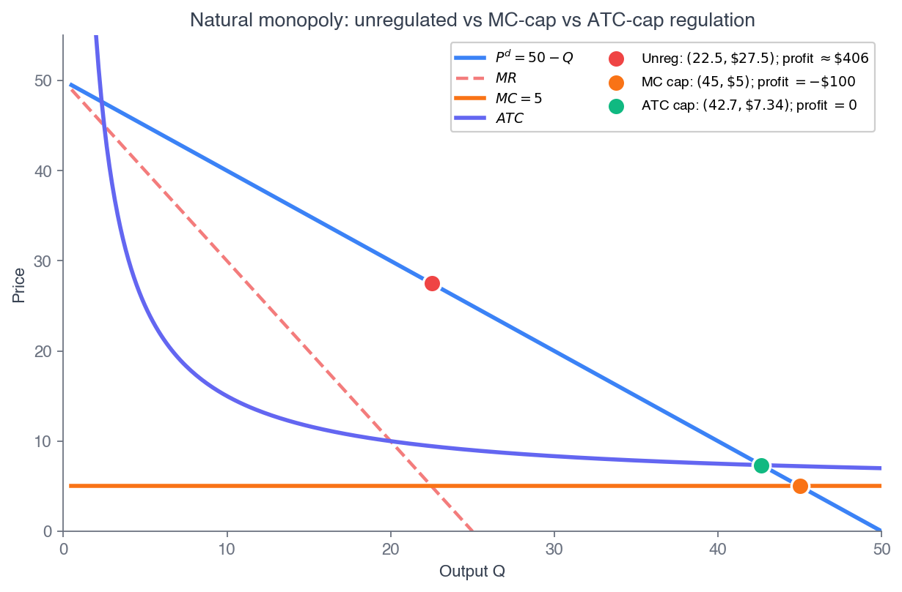
Fig 11.7 — the three regulated prices against demand.
Regulation in the Wild — PG&E and the Zero-\(MC\) Platforms
Application — PG&E 2023 General Rate Case
PG&E requested a \$15.4B revenue requirement; the CPUC adopted \$13.5B, with an allowed return on equity ~10%. The arithmetic follows the \(ATC\)-pricing logic of W11.7: estimate operating cost + depreciation + a fair return on the rate base, then set price to recover it.
The Averch–Johnson effect: because allowed profit scales with the capital base, the firm over-invests in capital. That distortion pushed the UK, Australia, and the EU toward price-cap ("RPI − X") regulation.
Application — Microsoft 365 & Adobe
Provisioning one more software license costs ~\$0; nearly all cost is fixed (R&D, sales, support). With \(MC \to 0\), the FOC \(L = -1/\varepsilon_D\) pushes the markup toward 1.
Microsoft 365 E3 rose \$23 → \$26/user/month (July 2026); Adobe moved customers into pricier Creative Cloud Pro. Switching costs (file-format lock-in, learning curves) lower elasticity, so enterprise-SaaS Lerner indices run 0.7–0.9 — closer to Wegovy than to Spotify.
§11.9
Generic-Drug Entry
How fast monopoly power dissolves when entry barriers fall
Walkthrough 11.8 — The Truvada Generic-Entry Collapse (2020)
Problem. Gilead's Truvada (HIV PrEP) listed near \(P_1 = \$1{,}600\)/month under patent, \(MC \approx \$50\). Oct 2020: Teva launched the first generic; within a year the price fell to ~\$50 with multiple makers. Compute pre- and post-entry Lerner indices.
Pre-entry (monopoly)
\(L_1 = (1600 - 50)/1600 = 0.969\). Implied \(\varepsilon_D = -1/0.969 = -1.032\) — just barely elastic, a no-substitutes therapeutic.
Post-entry (competition)
\(L_2 = (50 - 50)/50 = 0\). Multi-source generic competition collapses the markup to ~zero — the market turns Bertrand-competitive (Ch 13).
Welfare: the \$1,550 that flowed to Gilead as monopoly profit becomes consumer surplus, and the DWL units convert into actual consumption.
Takeaway. Patent length is a deliberate static-vs-dynamic tradeoff: longer patents fund more R&D (dynamic gain) but extend the static DWL window (static loss). When the patent expires, the welfare-theorem failure is restored in months.
Heads Up 11.6 — Coase conjecture
A durable-goods monopolist with no commitment may be pushed toward \(p = MC\) anyway: buyers anticipate future price cuts and wait. Hence leasing (Xerox), planned obsolescence, and the shift to subscriptions.
§11.10 — A Note on Augustin Cournot (1801–1877)
In 1838 the French mathematician Antoine Augustin Cournot published Recherches sur les principes mathématiques de la théorie des richesses. In a chapter on monopoly pricing he wrote down — almost word for word — the derivation in Calculus Corner 11.1: take \(R(p) = p\,D(p)\), differentiate to \(dR/dp = D(p) + p\,D'(p)\), set it equal to marginal cost, solve.
It was the first calculus-based model in economics — at a time when economic writing was verbal or geometric. The book was ignored in his lifetime; Walras and Jevons rediscovered him in the 1870s–80s. Abba Lerner (1934) built directly on it, turning the markup into the measurement tool that bears his name.
Cournot also wrote down, in the same 1838 book, the duopoly model that is the foundation of Chapter 13.
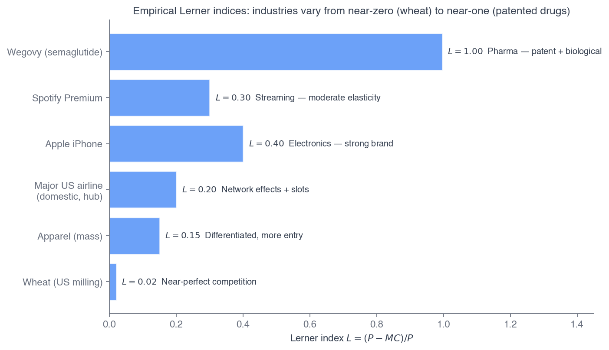
Fig 11.8 — the Lerner index across industries, near 0 to \(>0.85\).
Chapter Summary
Market power
A downward-sloping residual demand, \(P'(q) < 0\). Selling more lowers price on all units — the source of \(MR < P\).
Marginal revenue
\(MR = P(1 + 1/\varepsilon_D)\). Linear demand: same intercept, twice the slope. FOC: \(MR = MC\).
Lerner index ★
\(L = (P-MC)/P = -1/\varepsilon_D\). Markup is the inverse of elasticity — the central empirical tool.
Deadweight loss
\(Q_M < Q_C\) makes a Harberger triangle. Aggregate US cost: 5–10% of consumption (EMX 2023).
Natural monopoly
Subadditive cost (\(F + \mu q\)) → declining \(ATC\), no \(\min ATC\). \(ATC\) pricing kills ~99% of DWL.
Spotify ↔ Wegovy
\(L = 0.30\) (\(\varepsilon=-3.33\)) to \(L = 0.996\) (\(\varepsilon=-1.004\)) bracket the realistic range.
Why \$11.99? Because \(MR = MC\), and the markup it implies is \(-1/\varepsilon_D\). The Spotify thread continues: Chapter 12 lets the firm charge different prices to different groups — Student, Duo, Family, Premium.
Coming Up — Chapter 12: Pricing with Market Power
Today the monopolist charged one price to everyone. Chapter 12 relaxes that — and the same firm starts charging different prices to different groups.
Third-degree price discrimination: set \(MR_i = MC\) in each segment \(i\) \(\Rightarrow\) \(L_i = -1/\varepsilon_i\)
- The Lerner index, per segment: charge a higher markup where demand is less elastic — Student vs Family.
- Two-part tariffs: a fixed fee plus a per-unit price — set \(p = MC\), extract surplus through the fee.
- Bundling: when does selling Word + Excel together beat selling them separately?
Before next class: read manuscript §12.1–§12.3. The Spotify Premium portfolio — Student \$5.99, Duo \$16.99, Family \$19.99 — is price discrimination in plain sight.
Questions?
Dr. Richeng Piao · ECON 2316 · Chapter 11